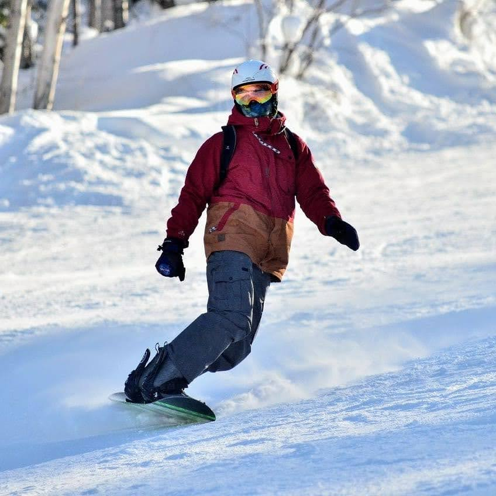

Сноубординг
Сноубо́рд, сноубо́рдинг (англ. Snowboarding от англ. snow — снег и англ. board — доска) — зимний олимпийский вид спорта, заключающийся в спуске с заснеженных склонов и гор на специальном снаряде — сноуборде. Изначально зимний вид спорта, хотя отдельные экстремалы освоили его даже летом, катаясь на сноуборде на песчаных склонах (сэндбординг). Поскольку, зачастую, катание на сноуборде проходит на неподготовленных склонах и на больших скоростях, для защиты от травм используется разнообразная экипировка — шлемы, защита суставов, рук, ног, спины. На зимних Олимпийских играх 1998 года в Нагано сноуборд был впервые включён в олимпийскую программу.